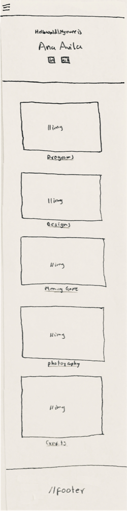
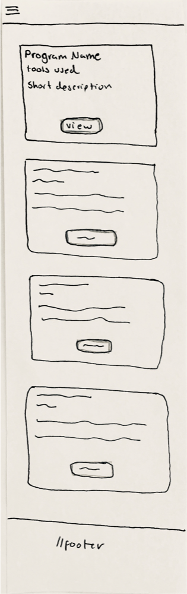
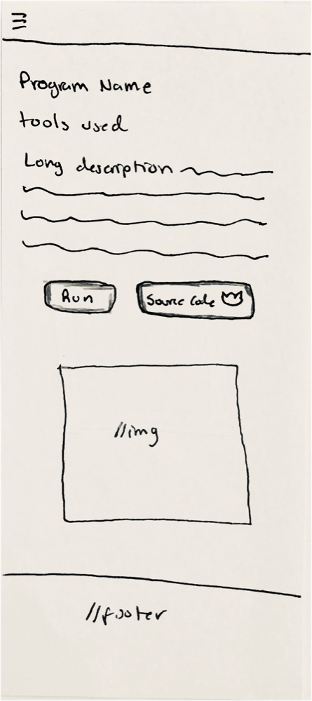
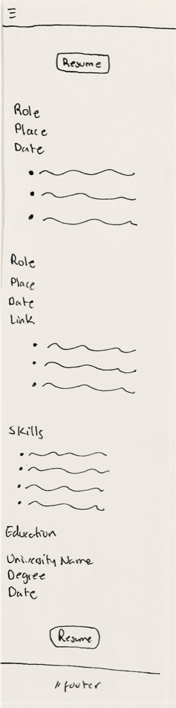
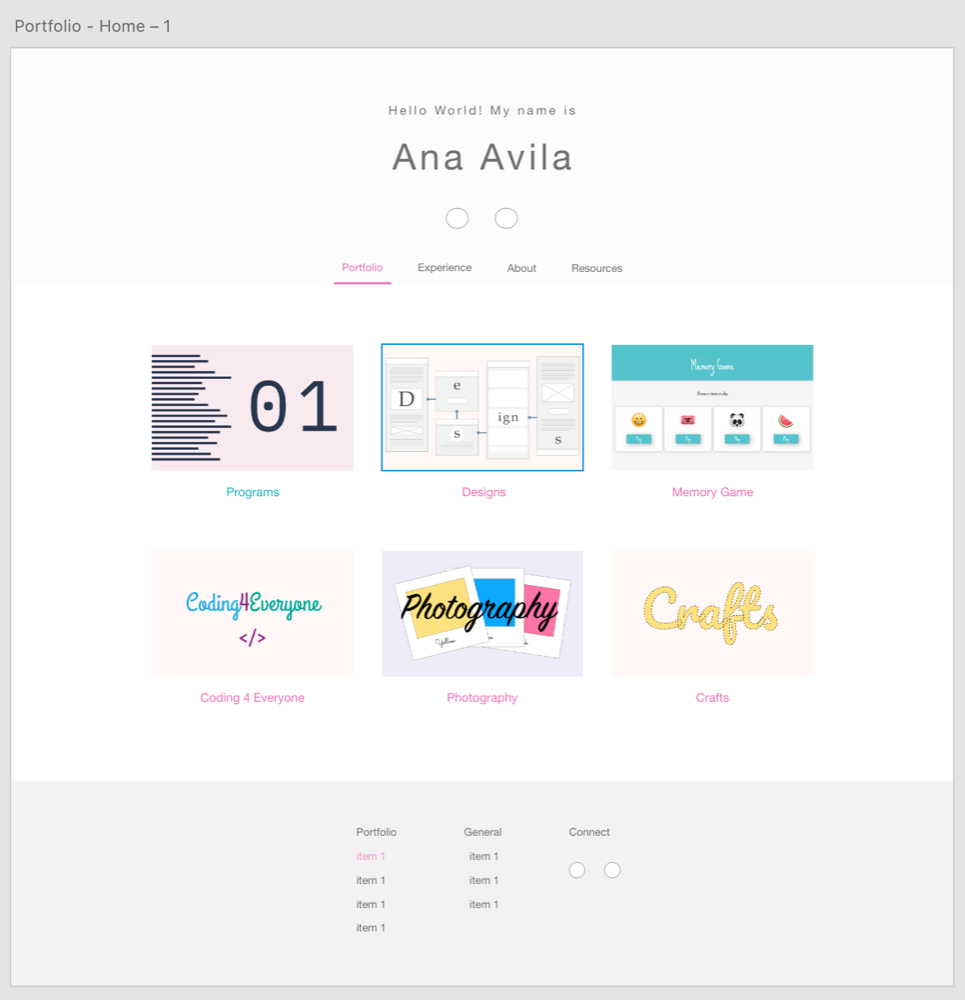
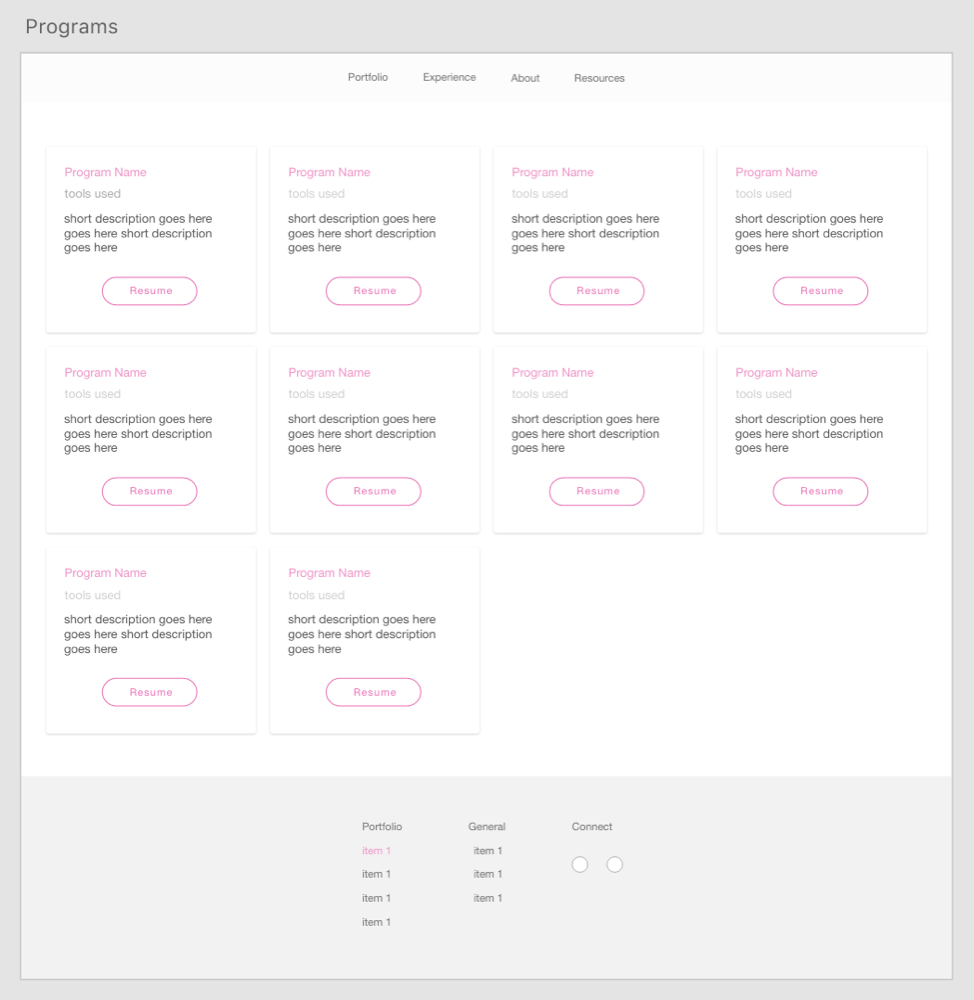
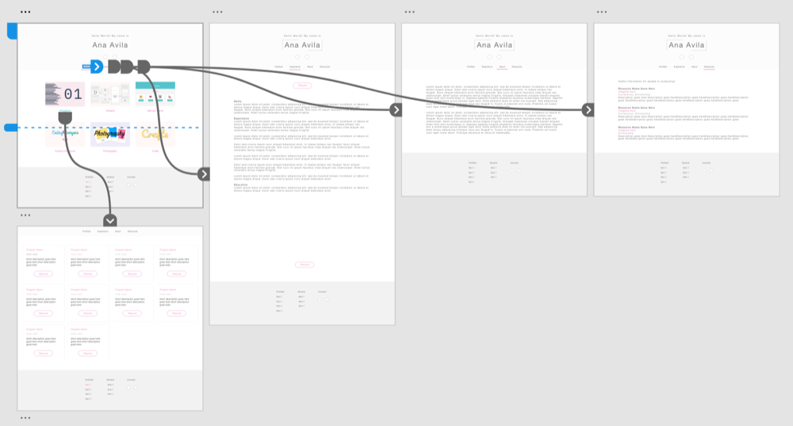
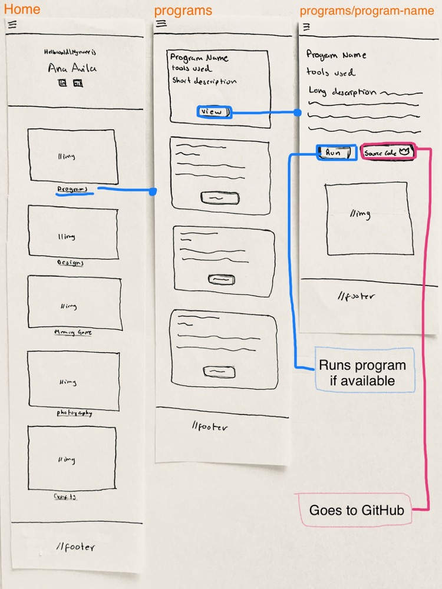
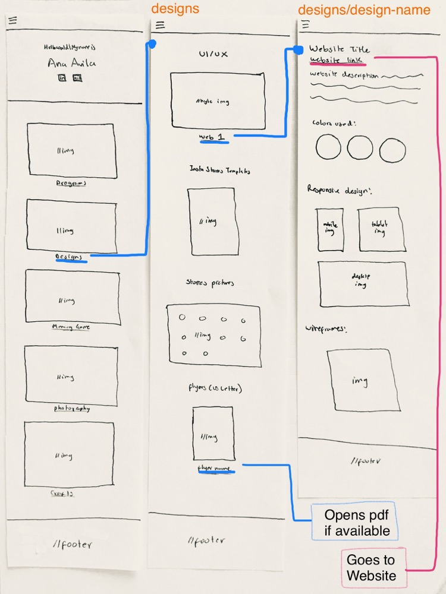

My Website Porfolio
Simple website portfolio where I added some projects such as computer programs, a photo gallery, etc.
I decided to stay with at least three fonts, and use two bright colors the least and light colors the most, to make the website look simple.
Below are some of the wireframes I followed to do the website.
Colors:
#E870B5
#1AB2C3
#707070
#909090
#F2F2F2
#FCFCFC
Fonts:
Sacramento
Source Code Pro
Muli
Responsive Design (Mobile):




Responsive Design (Desktop):


Interaction flows:



HTML, CSS, and JavaScript Code:
Once I have written the code, I compress it using a code compressor so that it helps to load faster.
I also modify images' dimensions using Photoshop or another tool.